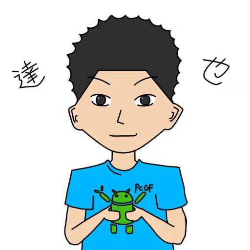
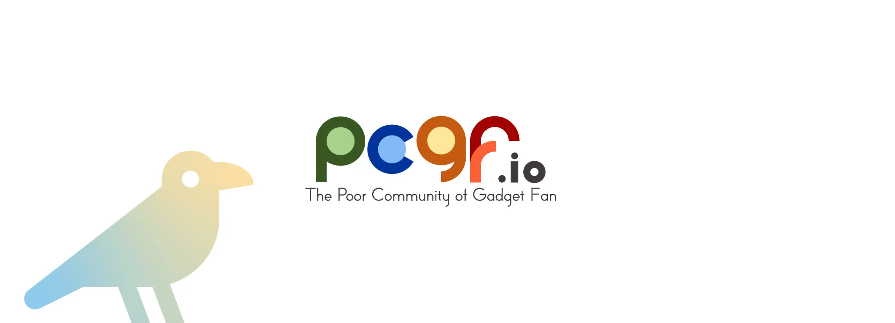

ようこそホームページへ
2014年3月18日:PSNアカウントにてtatsuya_0902を名乗る
2016年:Google+にて活動(~2019年4月2日)
2021年10月10日:ホームページ開設
2021年12月14日:新ホームページ公開
今に至る。
ブログ新着投稿
こんにちわ!!

達也です。
PCGFに所属してます。
主にtwitterとYづドンが
メインで活動しています。
よろしくお願いします。
ぷろふぃーるかーど
| 名前 | 達也 |
| 体重 | 104.8kg |
| 身長 | 169.4cm |
| 血液型 | O型 RH+ |
| 肝臓 | 悪い |
| 好きな食べ物 | 焼肉 |
| 好きな歌手 | SEKAI NO OWARI |
| 趣味 | アマチュア無線 車 |
| 職業 | 会社員 技術職 |
| 座右の銘 | 一期一会 |
PCGFとは

PCGFは学生時代のお金無しが集まったガジェット集団です。
現在はOSSを活用したソーシャルサービスの建築や広報活動、ガジェット情報の連絡、MNGなどをしております。
主な活動場所は、オンラインではMattermostやMastodonで活発な情報共有、オフラインではオープンソースカンファレンスでブースを展開しております。